Explore Ghent
A Brief History
Ghent was one of Europe's largest cities by 1300, when Flemish cloth weavers and grain traders built the Belfry, St Bavo's Abbey, and canals that moved wool to England. The 1447 revolt against Philip the Good and later Calvinist unrest showed the city's assertive commune before Spanish and Austrian rule. Nineteenth-century industry along the Lys and Leie rivers made Ghent a textile and port centre again, layering factories beside medieval towers in Flanders.
Attractions Map
Top Sights & Activities
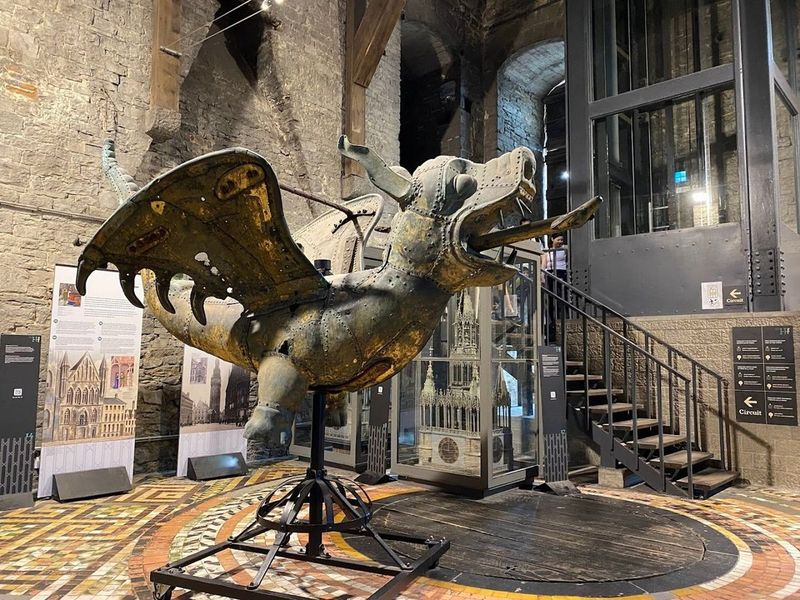
Belfry of Gent
The Belfry of Ghent, a bell tower constructed between 1313 and 1380 with subsequent additions, holds significant historical importance in the city. It stands alongside other prominent landmarks such as St. Nicholas Church and St. Bavo's Cathedral, offering picturesque views along the River Lys. travellers can stroll along the Graslei and Korenlei quaysides, observing the rich history of grain trade dating back to the 11th century.
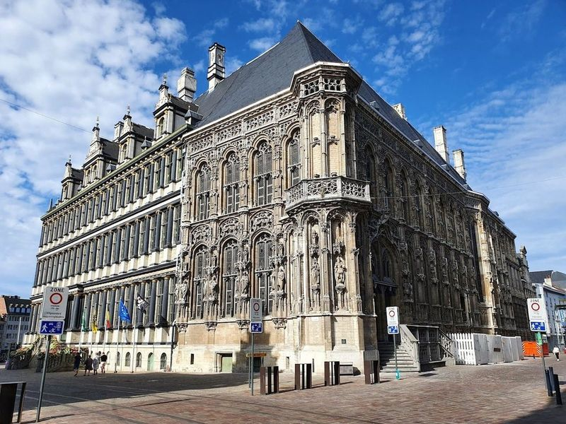
Gent City Hall
Ghent City Hall, also known as Stadhuis, is a remarkable architectural gem situated in the heart of Ghent on the historic market square. The building showcases a blend of Gothic and Renaissance styles due to its construction during a transitional period. One side features lush Gothic details while the other exudes the grandeur of Italian Renaissance palazzos. The city hall serves as a popular wedding venue with its Wedding Chapel adorned with beautiful stained-glass windows.
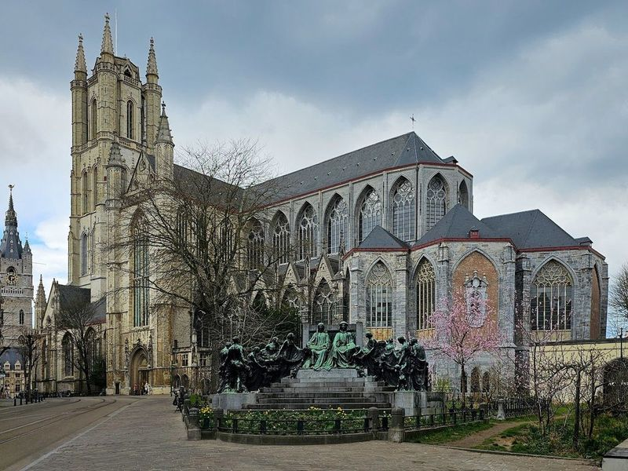
Saint Bavo's Cathedral
Saint Bavo's Cathedral, a architectural gem in Ghent, Belgium, is not only the site where Charles V was baptized but also houses the renowned Ghent Altarpiece by Van Eyck. The cathedral’s grand facade and intricate interior make it a photographer's paradise, especially with its stained glass windows and soaring vaulted ceilings.
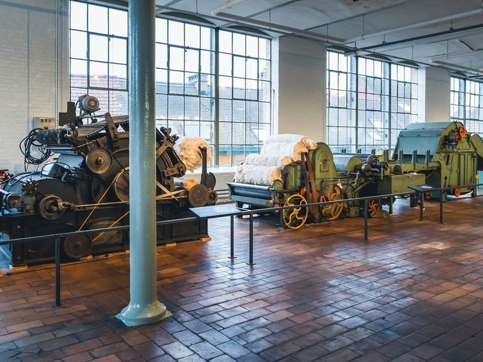
Museum of Industry Ghent
The Museum of Industry Ghent invites travellers to delve into the fascinating narrative of industrialization and the textile sector in Belgium. Nestled within a historic cotton-spinning mill, this museum serves as a portal to the past, showcasing how industry and technology have evolved from the 18th century onward. Guests can wander through diverse exhibits that highlight machinery, tools, and artifacts pivotal to advancements in textile production and other vital industries.
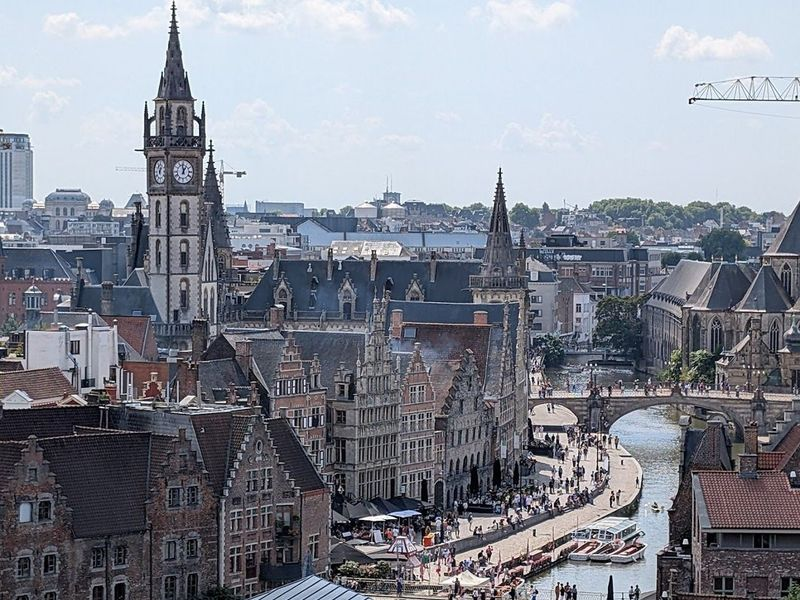
Castle of the Counts
Gravensteen, also known as the Castle of the Counts, is a well-preserved 10th-century moated castle located in Ghent, Belgium. The castle houses an armory museum and offers panoramic views of the city. travellers to Ghent can explore various famous sites such as the Belfry, Saint Bavos Cathedral (Sint-Baafskathedral), and the Adoration of the Mystic Lamb.
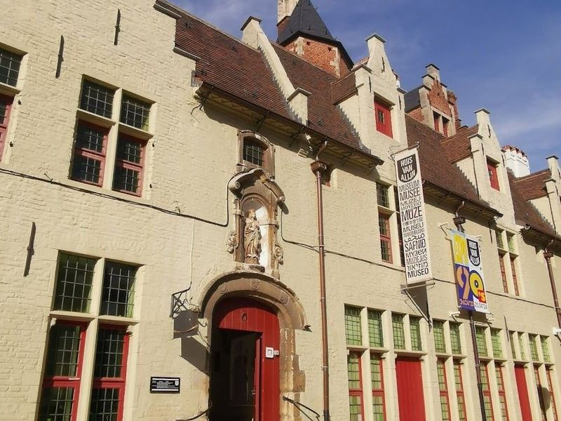
Huis van Alijn
Huis van Alijn is a museum housed in a restored almshouse, offering insights into 20th-century local life through recreated shops and exhibits. travellers can stroll through the former children's hospice to explore displays of old toys, packaging, household goods, and nostalgic items like Nintendo Donkey Kongs and Wilbur and Friends dolls. The museum provides an opportunity to delve into Belgian culture and traditions from the past to the present.
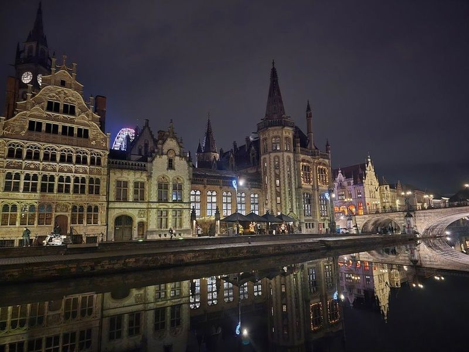
Korenlei
Korenlei is a picturesque spot in Ghent, where the architecture of the Graslei and Korenlei quaysides meets the tranquil waters of the River Lys. As you stroll along this historic riverbank, encounter landmarks like St. Nicholas' Church and St. Bavo's Cathedral, all beautifully reflected in the water. Don't forget to cross the charming Grasbrug bridge while dodging trams and bicycles!.
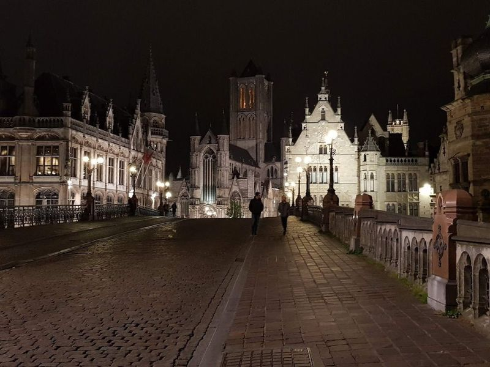
St Michael's Bridge
Saint Michael's Bridge in Ghent is an and picturesque spot offering views of the city's landmarks. The arched stone bridge provides a vantage point for capturing the beauty of the River Leie, with boats gliding along its waters. travellers can admire the impressive architecture surrounding them and take in sights such as the Graslei and Korenlei. The bridge also features a bronze statue of Saint Michael, adding to its allure.
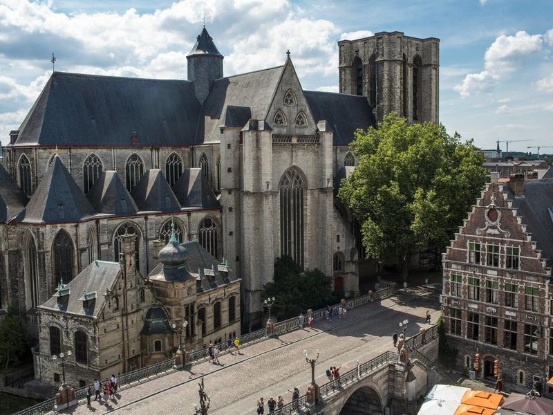
Saint Michael's Church
Saint Michael's Church is a grand and spacious church in Ghent, known for its impressive collection of paintings and sculptures by renowned artists. The church was originally intended to have a towering height that would surpass even Antwerp's Cathedral of Lady, but due to financial constraints, it stands at 23 meters tall. Despite its prolonged construction period spanning over 200 years, the church has maintained a remarkable late-Gothic appearance.
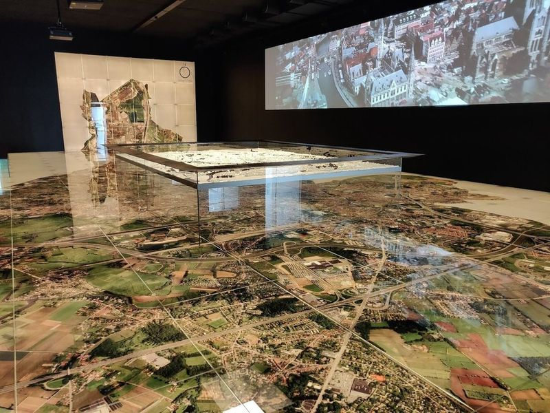
STAM - Ghent City Museum
STAM, also known as the Ghent City Museum, is a modern museum that offers an immersive experience into the history and development of Ghent. The museum's permanent exhibit, The Story of Ghent, takes travellers on a curated journey through the city's evolution from its medieval roots to its current status as a hub of knowledge and culture. Housed in historic buildings that were once part of a nunnery, STAM features interactive multimedia displays alongside an impressive floor map of Ghent.
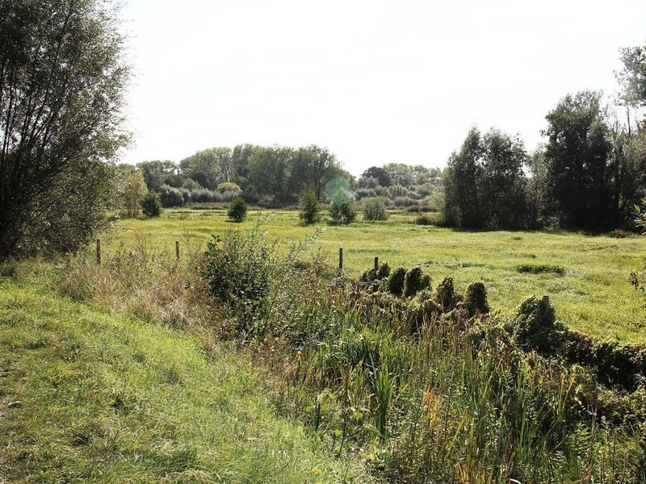
Bourgoyen-Ossemeersen
Bourgoyen-Ossemeersen is a nature reserve located just 14 minutes north of Old Town, offering over 220 hectares of untouched natural beauty. It's a perfect spot for nature walks, jogging, and biking with its diverse landscapes including pastures, marshes, and river views. The reserve is famous for bird migrations and offers various walking routes to explore the abundant flora and fauna.